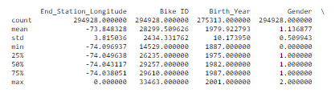
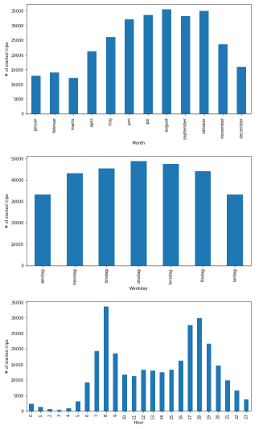

Explainer page
Motivation
- The dataset: The used dataset is Citi bike trip data, for trips started in Jersey City in 2017. The dataset was downloaded from the Citi bike NYC webpage, and includes the following variables (only the ones of interest for our analysis are mentioned):
- Start time and date
- Start station name
- End station name
- Station Lat/Long
- Gender (zero:unknown, 1:male, 2:female)
- Year of birth
- The goal for the end user's experience: The created story seeks to help the user explore certain patterns and trends in city biking. More specifically the story wants to help the user explore who uses the bikes and what they use them for, by looking at gender, age, certain stations/routes and certain times (of the year, the week or the day). This information can then be used to e.g. conclude whether certain user segments uses the bikes for transportion to/from work or for weekend outings.
- Why this dataset was chosen: The 2017 Jersey citi bike dataset was chosen, as Jersey City is a relatively large biking city. Jersey city has 50 citi bike stations, where the bike can be picked up, and then left at any of the 750 citi bike stations in Jersey City, Manhatten, Brooklyn or Queens. As mentioned above, the goal is to help the user explore certain patterns (also over the year) in city biking, and it was therefore chosen to only focus on trips starting in Jersey City, as this made it possible to consider data from an entire year, and still obtain fast, interactive visualizations. As a comparison the used dataset consists of 294.929 trips for the entire year whilst 726.677 trips were made in NYC in January, 2017.
Basic Stats
- Choices in data cleaning and preprocessing: The first preprocessing steps were made in Excel and consisted of converting the variable "Year of birth" to "Age", and saving the variable "Start time and date" as 3 variables stating the starting month, weekday and hour. The subsequent data cleaning and preprocessing was done in an iPython jupyter notebook.
It was in the data cleaning process chosen to remove the trips were the gender and age was unknown (in most cases both are unknown simultanously), as this is an important part of our analysis. Additionally it is chosen to remove trips were the user has stated that they are 118 or 131 years old, as this probably is some sort of default lowest possible value that they have just chosen. It is considered reasonable to remove all of these data points as it only reduces the dataset from 294.929 trips to 273.987.
Furthermore, the dataset is used to create 2 new datasets, one containing all start stations (Station name and Lat/Long) and one containing all stations, which is needed for plotting the stations on a map.
- Dataset stats and key points/plots from exploratory data analysis: In the exploratory analysis it is found that the citi bikes are mostly used by males in their 30s, which can be seen in the snippet below, which is computed by using iPythons describe():

By plotting the number of started trips on certain months, weekdays and time of day we obtain the distributions seen below. A clear pattern can be seen in the distribution over hours, showing how people mostly use the bikes between 7-9 and 17-19 (and on weekdays in the warmer months).

This pattern becomes even more clear when only looking at the distribution over hours on weekdays, and disappears when only looking at weekends, indicating that people use the bikes for transportation to from work:
Hourly distribution on weekdays:
 Hourly distribution on weekends:
Hourly distribution on weekends:
 When only considering the gender, the distributions seen above look similar, but if also including age many different distributions can be found. As an example it can be found that young males seem to follow the to/from work pattern more clearly than young females:
Males, 17-25 years:
When only considering the gender, the distributions seen above look similar, but if also including age many different distributions can be found. As an example it can be found that young males seem to follow the to/from work pattern more clearly than young females:
Males, 17-25 years:
 Females, 17-25 years:
Females, 17-25 years:
 It is also found, when people mainly use certain stations. And again a clear pattern tells us that people head out to work in the morning and goes back home in the evening:
Time 6-9, starting station:
It is also found, when people mainly use certain stations. And again a clear pattern tells us that people head out to work in the morning and goes back home in the evening:
Time 6-9, starting station:
 Time 6-9, ending station:
Time 6-9, ending station:
 Time 16-19, starting station:
Time 16-19, starting station:
 Time 16-19, ending station:
Time 16-19, ending station:

Genre
The main visualization in the created narrative is of the genre partioned poster, which is set up in an article written in a Martini glass structure, as described in [1].
- Tools used from each of the 3 categories of Visual Narrative:
- Visual structuring: Consistent Visual Platform
- Highlighting: Feature Distinction
- Transition guidance: Object Continuity
- Tools used from each of the 3 categories of Narrative Structure:
- Ordering: User Directed Path
- Interactivity: Hover Highlighting / Details, Filtering / Selection, Stimulating Default Views
- Messaging: Captions / Headlines, Accompanying Article (Martini Glass Structure, i.e. introducing user and then letting them explore the data for themselves, i.e. no conclusion), Introductory Text
Visualizations
- The chosen visualizations: The first part is a box, that makes it possible for the user to only see the data based on certain user segments (gender, age). This selection affects both visualizations. The first visualization consists of a map of Jersey City and 3 bar charts, which are all brushable - when brushing either one, both visualizations will update. The start stations are plotted on the map, and their size is relative to the number of trips starting at that station according to the given selection. Details-on-demand are given when hovering over a station, which states how many trips started there.
The bar charts indicate how many trips started at any given month, weekday and hour for the given selection.
The second visualization consists of a map of Jersey City and parts of Manhatten and Brooklyn. All stations are plotted on the map. The stations that are on the 100 most popular routes for the given selection, are colorized based on whether the station mostly is a pickup of dropoff station. These stations are also sized relative to the number of trips starting and ending there. Additionally the 25 most popular routes are visualized as lines between the pickup and dropoff stations. Details-on-demand are given when hovering over any station or route. When hovering over a station the number of pickups and dropoffs, based on the 100 most popular routes are stated. When hovering over a route the number of trips in either direction is stated. Note that since the number of trips are computed based on the 100 most popular routes, one can run in to events where there e.g. are 1000 trips from Sip Ave to Oakland Ave, but 0 from Oakland Ave to Sip Ave, simply because the route Oakland Ave → Sip Ave is not on the top 100 of routes. Also note that since the map in the first visualization only contains start stations, brushing a single station will mean that all routes will start with this station, and all other stations will automatically only have dropoffs.
- Why these visualizations are right for telling the story: The selection box makes it possible for the user to explore different trends in city biking, based on age and gender. The first visualization is perfect for helping the user figure out what people are using the bikes for. The user could e.g. brush the weekday chart on monday-friday to explore the hourly distribution on these days, and on the map see which stations are mostly used in this timeframe. Additionally the user could then brush the hour chart on e.g. 7-10 to explore which stations are mostly used in this timeframe. Having done this the user could go to the second visualization to see the flow of the routes, and the opposite flow could be seen by going back to the hourly chart and changing it to 16-20, where the bikers are going back home.
Discussion
- What went well: Setting up and using crossfilter, which makes it possible to filter the data based on many different variables went well, and it was possible to create visualizations where the interactivity/brushing responds relatively fast (extremely fast when only including the first visualization).
- What is missing/could be improved: In a later iteration of exploratory analysis it was found that the users with unknown gender and age seems to ride more in the weekends and more equally distributed over the day. This might indicate that these users are not annual members that use the bikes for commutes, but might just be interested in riding a single ride, and therefore do not want to bother including age and gender. For future work this data should therefore also be included, as this would unveil different users, such as tourists. This could e.g. be included as a "unknown gender" and "unknown age"-checkmark.
One could also consider to let the second visualization be a Chord diagram, as this neatly would illustrate the flow of the routes. Although one would have to consider whether it makes just as much sense if no additional map is included.
Additional future work includes:
- Making it possible to start a brushing session on top of a station in the map, so that it is easier to select single stations
- Optimizing the code, so that it in the second visualization is possible to do the computations based on all routes, so that all stations are relatively sized and coloured, making the flow of the routes more clear
References
[1]: Segel, E. and Heer, J. (2010): "Narrative Visualization: Telling Stories with Data", IEEE Transactions on Visualization and Computer Graphics 16(6): 1139-1148.